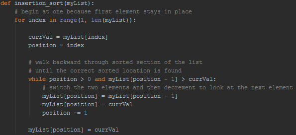
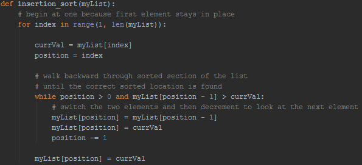

Insertion Sort
The Insertion Sort takes an element of the list, compares it with all of the previous elements, which have already been sorted, and incrementally moves down the list of sorted data until it finds its spot in the sorted order. For example, beginning with the first element in the list, this element will simply stay where it is for now because there are no elements prior to it. Next, the second element compares itself to the one previous to it, and will shift down if it is less than this prior element. Then, the third element will compare itself to the second element, if it is less, they switch positions, and it will then compare itself to the first element and switch with that if it is less. The element to be sorted knows will stop searching for its spot in the array once it finds another element that is less than it, or once it hits the beginning of the list, meaning there is nothing less than it. This pattern of comparing and switching continues until all of the elements of the unsorted list have had the chance to compare to the other sorted elements.
 
